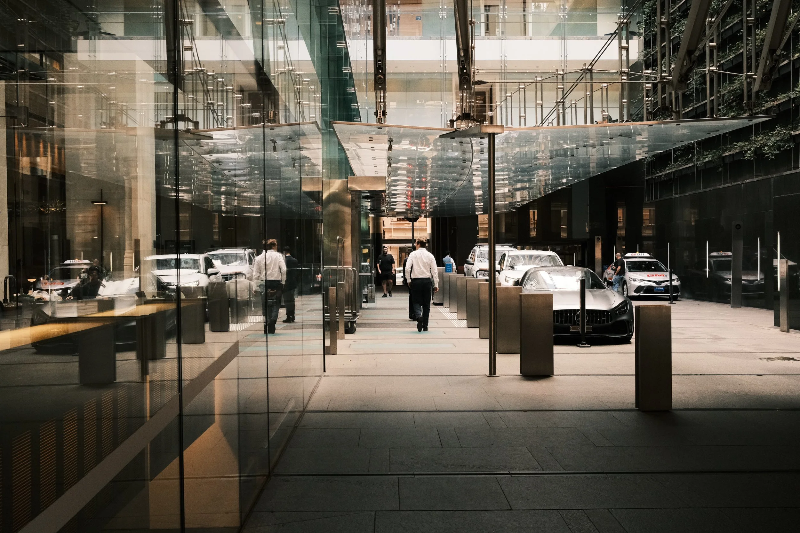
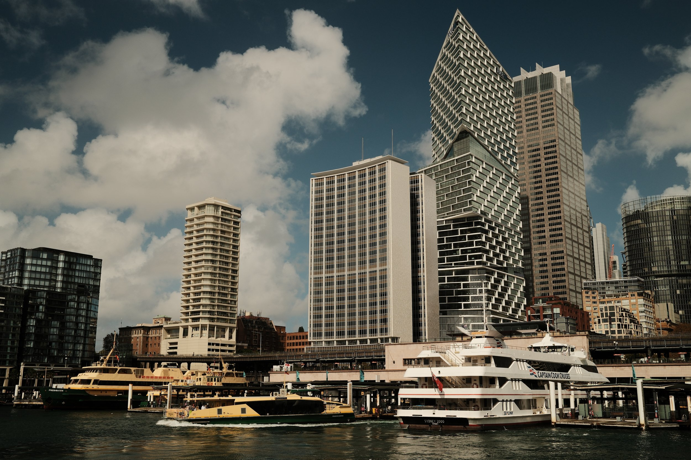
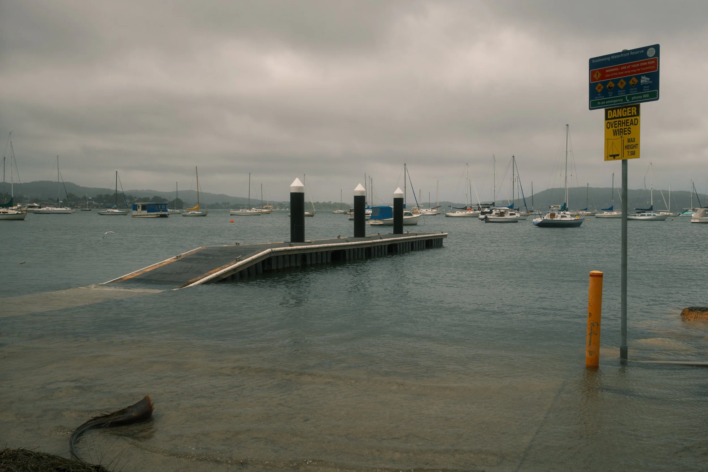
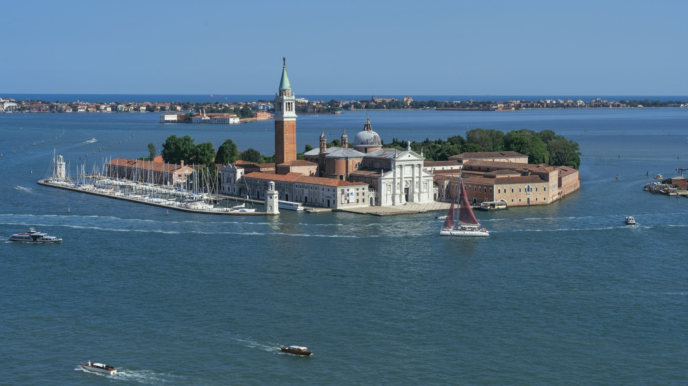

Street Journal
Street Life in Sydney
Candid light, shadow play, and observing the natural rhythm of everyday life through the streets of Sydney.
Read Story →
Architecture Walk
Lines in the Sky
Walking through Barangaroo on an overcast morning, exploring vertical geometry and reflections bouncing off glass and steel.
Read Story →
Coast Journal
Chasing the Sun
Tracking golden light, coastal horizons, and the shifting texture of the NSW shoreline at first light.
Read Story →
Visual Essay
After the Storm
Quiet reflections, damp bitumen, and high-contrast clearing skies following a coastal squall.
Read Story →
Field Notes
The Morning After
Filtered morning light, subtle environmental stillness, and macro botanical textures.
Read Story →
Photo Essay
When the Hill Turned Orange
Warm late-afternoon glow washing across ridgelines, headlands, and distant landscapes.
Read Story →